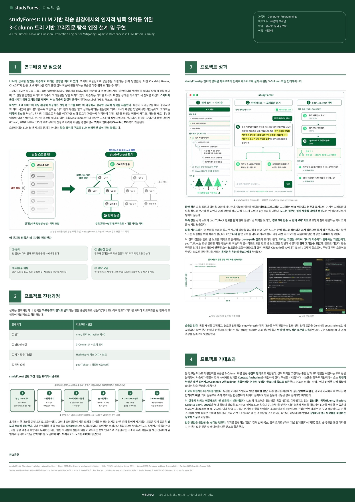

001
Featured · Web
서울대학교 · 공과대학 · 컴퓨터공학부 · 컴퓨터프로그래밍
서울대학교 · 사회과학대학 · 심리학과 · 고급학습심리학 웹 애플리케이션 · Python, Java · 2026
Thinket (구 studyForest) ↗ 라이브 데모 체험가입 없이 · 예시 숲이 열린다 thinket.ai초대제 비공개 베타
서울대학교 · 학부대학 · 컴퓨팅 핵심: 컴퓨터로 사고하기서울대학교 · 공과대학 · 컴퓨터공학부 · 컴퓨터프로그래밍
서울대학교 · 사회과학대학 · 심리학과 · 고급학습심리학 웹 애플리케이션 · Python, Java · 2026
사고는 한 줄로 흐르지 않는다. 하나의 생각은 여러 갈래로 뻗고, 그 갈래마다 또 새로운 생각이 자라난다. 그러나 LLM으로 학습하는 환경, 끝없이 아래로만 쌓이는 선형 스크롤 UI는 이렇게 분기하는 사고와 맞물리지 못한다. 깊이 들어갈수록 처음 무엇을 알고 싶었는지 흐려지고, 전체 맥락을 머릿속에 떠안게 된다. Thinket은 대화를 질문들의 숲으로 다시 세운다. 답변의 한 대목에 형광펜을 그으면 그 자리가 닻이 되어 가지가 자라고, 머릿속에 쌓이던 탐구의 구조가 화면으로 나와 눈으로 보고 오갈 수 있게 된다. 그리고 그 구조가 곧 모델이 읽는 맥락이 된다. 뿌리에서 지금까지의 경로만 모델에 보내므로, 무엇이 맥락으로 들어갈지는 손댈 수 없는 기본값이 아니라 학습자가 보고 고르는 것이 된다.
수업 과제로 출발해 제품이 됐다. Python으로 설계를 검증하고 같은 설계를 Java(OOP)로 전면 재구현하며 구조를 굳힌 뒤, Thinket으로 이름을 바꿔 자체 도메인에서 초대제 비공개 베타를 운영하고 있다. FastAPI와 PostgreSQL 위에 프레임워크도 빌드 단계도 없는 바닐라 JS 프런트엔드를 얹었고, 생성 비용은 서버가 부담해 이용자는 자기 API 키 없이 쓴다.

연구 포스터 · 컴퓨터프로그래밍 최우수 프로젝트 (PDF) ↗